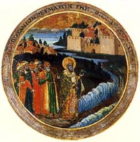

A Variety of Legends – Part 2
The Legend of
the Precious Cup
A rich couple with no children begs St. Nicholas to
grant them a son. If the prayer is granted, the father promises to make a
pilgrimage to St. Nicholas’ tomb with the child, and place a precious goblet
upon it. The son is born and grows up well. The father orders a goldsmith to
make him a golden goblet as he’d promised. When the goldsmith gives it to him,
it’s so beautiful that he decides to keep it for his own use. He orders another
from the goldsmith to carry out his vow.
During the voyage to Myra, the father asks his son
to fill the first cup with water from the sea. When he attempts to do this, he
falls overboard and drowns. The father, in great anguish, continues the journey
alone and shortly arrives at the tomb. When he tries to place the second cup on
the altar, some invisible force keeps pushing it away. He tries again, but all
his attempts prove useless. Suddenly, to the astonishment of everyone there,
the child appears, safe and sound, holding the first cup. He tells the
astonished gathering that St. Nicholas had saved him from certain death.
Overjoyed, his father places both cups on St. Nicholas’ altar.
According
to The Golden Legend:
“Another
nobleman prayed to Saint Nicholas that he would, by his merits, get of our Lord
that he might have a son, and promised that he would bring his son to the
church, and would offer up to him a cup of gold. Then the son was born and came
to age, and the father commanded to make a cup, and the cup pleased him much,
and he retained it for himself, and did do make another of the same value. And
they went sailing in a ship toward the church of Saint Nicholas, and when the child
would have filled the cup, he fell into the water with the cup, and anon was
lost, and came no more up. Yet nevertheless the father performed his avow, in
weeping much tenderly for his son; and when he came to the altar of Saint
Nicholas he offered the second cup, and when he had offered it, it fell down,
like as one had cast it under the altar. And he took it up and set it again
upon the altar, and then yet was it cast further than tofore and yet he took it
up and remised it the third time upon the altar; and it was thrown again
further than tofore. Of which thing all they that were there marvelled, and men
came for to see this thing. And anon, the child that had fallen in the sea,
came again prestly before them all, and brought in his hands the first cup, and
recounted to the people that, anon as he was fallen in the sea, the blessed
Saint Nicholas came and kept him that he had none harm. And thus his father was
glad and offered to Saint Nicholas both the two cups.” (The Golden Legend compiled by Jacobus de Voragine)
The Legend of the
Strangled Boy
One of the best known of the stories of St. Nicholas’
protection of children appears in The
Golden Legend:
“A man, for the love of his son, that went to school
for to learn, allowed, every year, the feast of S. Nicholas much solemnly. On a
time it happed that the father had do make ready the dinner, and called many
clerks to this dinner. And the devil came to the gate in the habit of a pilgrim
for to demand alms; and the father anon commanded his son that he should give
alms to the pilgrim. He followed him as he went for to give to him alms, and
when he came to the quarfox the devil caught the child and strangled him. And
when the father heard this he sorrowed much strongly and wept, and bare the
body into his chamber, and began to cry for sorrow, and say: ‘Bright sweet son,
how is it with thee? S. Nicholas, is this the guerdon that ye have done to me
because I have so long served you?’ And as he said these words, and other semblable,
the child opened his eyes, and awoke like as he had been asleep, and rose up
tofore all, and was raised from death to life.” (Jacobus de Voragine, The Golden
Legend: Lives of the Saints, translated by William Caxton, p. 71)
In another version of the story, a good man of Lombardie celebrates the Feast of St. Nicholas every year. On such a morning while he’s at Divine Liturgy with his wife and household, his child remains alone in the house. The devil, in the form of a beggar, asks the child for bread. Upon receiving it, he seizes and strangles the child to death.
In the midst of the lamentations of the parents, St. Nicholas (who assumes the appearance of a pilgrim) comes to their door. The father takes him into the room where the child’s body lays. St. Nicholas immediately restores the child to life.
The Legend of the Dinner with Mohammed
How well St. Nicholas is thought to be able to
present the Christian cause is well brought out in a naively humorous Albanian
folktale. The story unfolds as follows:
Mohammed is the guest of Nicholas. When the time to
eat comes around, Mohammed asks where the servants are. Nicholas replies that
no servants are needed. At a word from his mouth or a stroke on the table, the
meal will be ready. He then proceeds to demonstrate that what he says is entirely
true. Everything one could desire to eat and drink suddenly appears on the
table before them.
Mohammed is not to be outdone. Upon his return home
he orders his servant to construct a table that will revolve so it can be
closed into the wall, leaving no visible sign. He commands his servant to
prepare every kind of food imaginable. When the servant hears his master’s rap
on the wall, the servant is to push the laden table through the wall. Mohammed
then invites Nicholas to his house, intending to exhibit powers as great as
those shown by him.
Nicholas makes all of Mohammed’s plans go awry. He makes the servant deaf, so that there’s no response to the rap of Mohammed. So Nicholas himself gets up and brings in the table laden with food (through the wall) – to the complete discomfiture of his host!
The next day Mohammed invites Nicholas again,
promising to work a miracle before him. For this feat, he takes a large number
of jugs, cans and dishes to the top of a hill. When Mohammed gives a signal,
they’re to be rolled down the hill and a cannon fired. When Nicholas arrives,
he asks Mohammed to work his miracle. Mohammed raises his hand, and the
expected noise follows. Nicholas, however, shows no reaction. Mohammed then
asks him to work a miracle. Nicholas
claps his hands. Immediately the thunder rolls and the lightning flashes,
overwhelming Mohammed with terror.
The Legend of the Demon Possessed Child
According to a story in Wace’s Life of St. Nicholas, a mother brings a child to Nicholas. This
child is so grievously afflicted by a demon that he’s uncontrollable. Nicholas
makes the sign of the cross over the child, driving out the demon, and the
child is instantly healed.
The Legend of the Devil in the Well
One exorcism legend that developed in the Ukraine and Russia (neither recorded nor depicted in western Europe) concerns the banishment of the devil from a well. A fifteenth-century Russian icon depicting this legend (kept in the Russian Museum in St. Petersburg) shows the devil – small and black – emerging from the waves atop the well.
The Legend of the Submerged Icon
There is an icon of St. Nicholas at Mount Athos, the Greek monastery. According to legend, this icon had been submerged in the sea for 300 years. When fishermen recovered it, mussels had fastened themselves to the upper section of the Saint’s forehead. When they were removed, the icon bled.
Thought to Ponder: In these legends, we see
the hand of God at work through St. Nicholas. He teaches the dishonest father a
lesson in honesty that he’ll never forget and saves the life of the innocent
son. He restores life to a small boy, thus keeping a devout family intact. He
exposes fraud and proves the superiority of Christianity. He heals and he
exorcises. And finally, no matter what happens to him, he comes back – as
powerful in the Lord as before.
Thought to Discuss around the Dinner Table: What do our deeds say about
us? If we were to die tonight, how would people remember us? Would they say, “I
saw Jesus at work in that person”?
A Variety of Legends – Part 2
